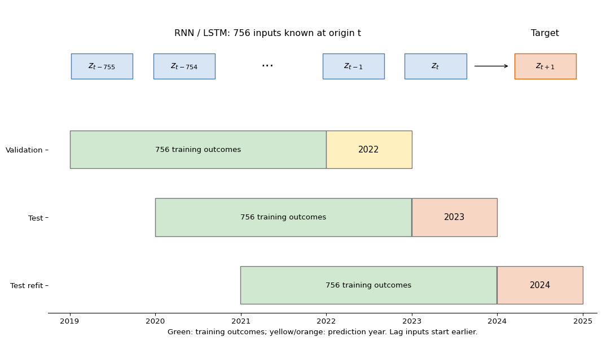
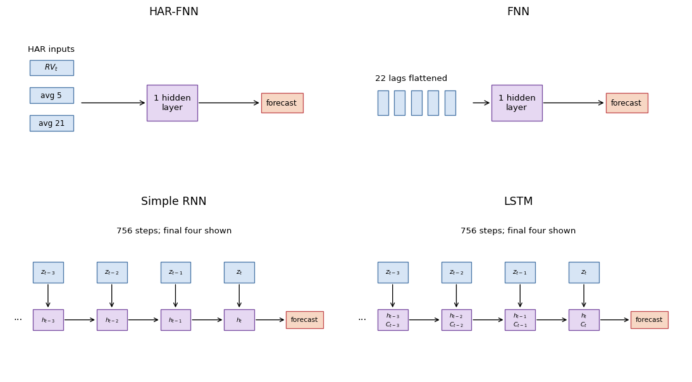
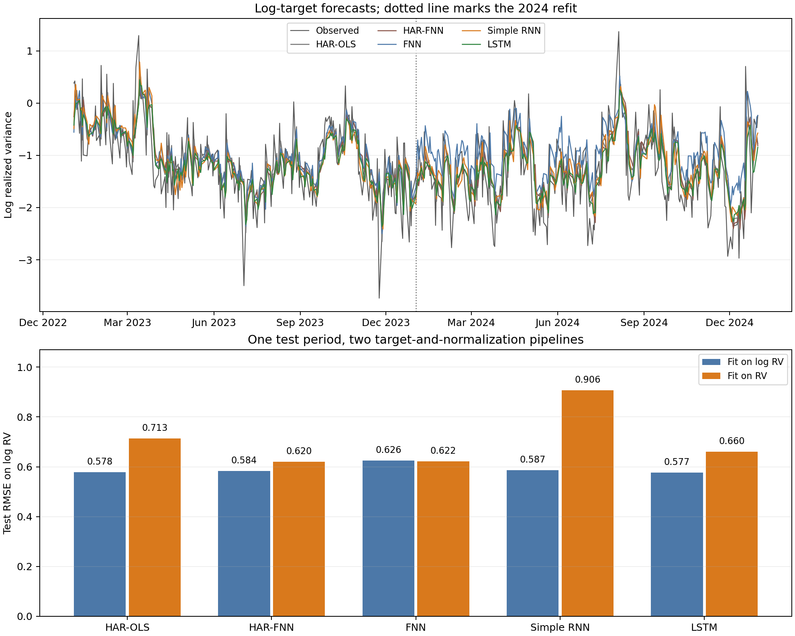

Under active development. A stable version is expected in November 2026. Feedback is welcome by email or via GitHub issues.
8 Empirical Illustration: Neural Networks for Realized Volatility
8.1 Overview
Neural-network architectures are often introduced as if the main empirical question were which architecture is most powerful. In time-series econometrics, that is usually the wrong starting point. Before comparing a feed-forward network, a recurrent network, or an LSTM, we must define the forecast target, the information set at each forecast origin, the validation scheme, and the loss function used for evaluation.
This chapter makes those choices explicit in a single empirical illustration. The object is one-step-ahead forecasting of SPDR S&P 500 ETF (SPY) realized volatility, using the daily realized-variance measures described in the dataset appendix.
The empirical comparison has two purposes. First, it shows why modeling \(\log(RV)\) is often more stable than modeling realized variance in levels. Second, it compares a linear HAR-OLS benchmark with four neural-network specifications — a parsimonious HAR-FNN, a full feed-forward network, a Simple RNN, and an LSTM — all evaluated under the same forecast-origin discipline. A central finding is that HAR-OLS is not easily beaten: the nonlinear HAR-FNN underperforms its linear counterpart on every loss, and the full-history neural networks match HAR-OLS without substantially improving on it.
8.2 Roadmap
- We define the realized-volatility target and the one-step-ahead forecast origin.
- We specify the local-data workflow and the time-ordered train-validation-test split.
- We define the HAR-OLS, HAR-FNN, full FNN, Simple RNN, and LSTM inputs.
- We tune the neural networks using only the validation block.
- We interpret the empirical results as evidence about target transformations, benchmark choice, and architecture choice.
8.3 Data and Forecast Target
Let \(r_{t,j}\) denote the \(j\)th intraday return on trading day \(t\). A standard realized-variance measure is
\[ RV_t=\sum_{j=1}^{M_t} r_{t,j}^2, \]
where \(M_t\) is the number of intraday return intervals available after cleaning. Realized variance is positive, highly right-skewed, and persistent. For that reason, a common forecasting target is
\[ z_t = \log(RV_t), \]
although the empirical comparison below also reports what happens when the networks are fit directly to \(RV_t\) in levels.
For the log target, the one-step-ahead forecasting problem is
\[ \widehat z_{t+1\mid t} = f_\theta(z_t,z_{t-1},\ldots,z_{t-21}), \]
where the input window contains the previous 22 trading days, roughly one trading month. The forecast target \(z_{t+1}\) is not part of the input window.
The full-history models all use this same forecast-origin history. The full FNN receives the 22 lags as a flattened feature vector. The Simple RNN and LSTM receive the same values as an ordered sequence. The HAR specifications are different by design: they receive a traditional volatility summary consisting of yesterday’s realized variance \(RV_t\), the trailing 5-day average, and the trailing 21-day average. These are all known at the forecast origin \(t\).
The local replication code expects the daily SPY realized-measures file documented in the dataset appendix.
Figure 8.1 shows the forecast-origin convention. The training, validation, and test blocks are chronological. Scaling constants and hyperparameters are learned before the test block is touched.
The workflow below makes the econometric design explicit: it constructs forecast origins before splitting the sample, estimates scaling constants only on the training block, and keeps the test block untouched until the final comparison. Replication uses the local SPY realized-variance file documented in the dataset appendix.
The first chunk loads the realized-variance series and constructs \(z_t=\log(RV_t)\). Rows with missing or nonpositive realized variance are excluded before forming forecast origins.
Show the code
import os
os.environ["KERAS_BACKEND"] = "tensorflow"
os.environ["TF_CPP_MIN_LOG_LEVEL"] = "3"
import random
import numpy as np
import pandas as pd
import optuna
import keras
from keras import layers
from sklearn.metrics import mean_absolute_error, root_mean_squared_error
from sklearn.linear_model import LinearRegression
optuna.logging.set_verbosity(optuna.logging.WARNING)
random.seed(0)
np.random.seed(0)
keras.utils.set_random_seed(0)
path = "data/taq_spy/SPY_daily_measures.csv"
rv = (
pd.read_csv(path, parse_dates=["date"])
.sort_values("date")
.loc[:, ["date", "rv"]]
.dropna()
)
rv = rv.loc[rv["rv"] > 0].reset_index(drop=True)
rv["z"] = np.log(rv["rv"])
print(f"observations: {len(rv)}, range: {rv['date'].min().date()} to {rv['date'].max().date()}")observations: 2451, range: 2015-01-02 to 2024-12-31The next helper constructs the supervised forecasting problem. For each valid origin \(t\), the full-history models see \((z_t,\ldots,z_{t-21})\) and forecast \(z_{t+1}\). The HAR helper uses the same origin \(t\) but replaces the 22 individual lags by three realized-variance summaries:
\[ \left( RV_t,\quad \frac{1}{5}\sum_{j=0}^{4} RV_{t-j},\quad \frac{1}{21}\sum_{j=0}^{20} RV_{t-j} \right). \]
The training block is the first 64% of valid forecast origins, the validation block is the next 16%, and the test block is the final 20%. The validation block is sized to give enough forecast origins for stable hyperparameter selection via Optuna while keeping the test block large enough for a reliable out-of-sample comparison.
Show the code
window = 22
def make_windows(values, window):
X, y, target_index = [], [], []
for end in range(window - 1, len(values) - 1):
X.append(values[end - window + 1 : end + 1])
y.append(values[end + 1])
target_index.append(end + 1)
return np.asarray(X), np.asarray(y), np.asarray(target_index)
def make_har_features(rv_values, target_values, window):
X, y, target_index = [], [], []
for end in range(window - 1, len(rv_values) - 1):
X.append(
[
rv_values[end],
rv_values[end - 4 : end + 1].mean(),
rv_values[end - 20 : end + 1].mean(),
]
)
y.append(target_values[end + 1])
target_index.append(end + 1)
return np.asarray(X), np.asarray(y), np.asarray(target_index)
def make_log_har_ols_features(rv_values, window):
X, y, target_index = [], [], []
for end in range(window - 1, len(rv_values) - 1):
X.append(
np.log(
[
rv_values[end],
rv_values[end - 4 : end + 1].mean(),
rv_values[end - 20 : end + 1].mean(),
]
)
)
y.append(np.log(rv_values[end + 1]))
target_index.append(end + 1)
return np.asarray(X), np.asarray(y), np.asarray(target_index)
X_raw, y_raw, target_index = make_windows(rv["z"].to_numpy(), window)
X_har_ols_log_raw, y_har_ols_log_raw, _ = make_log_har_ols_features(
rv["rv"].to_numpy(),
window,
)
X_har_raw, y_har_raw, target_index_har = make_har_features(
rv["rv"].to_numpy(),
rv["z"].to_numpy(),
window,
)
X_har_rv_raw, y_har_rv_raw, _ = make_har_features(
rv["rv"].to_numpy(),
rv["rv"].to_numpy(),
window,
)
X_lag_rv_raw, y_lag_rv_raw, _ = make_windows(rv["rv"].to_numpy(), window)
dates = rv.loc[target_index, "date"].reset_index(drop=True)
n = len(y_raw)
train_end = int(0.64 * n)
valid_end = int(0.80 * n)
X_train_raw, y_train_raw = X_raw[:train_end], y_raw[:train_end]
X_valid_raw, y_valid_raw = X_raw[train_end:valid_end], y_raw[train_end:valid_end]
X_test_raw, y_test = X_raw[valid_end:], y_raw[valid_end:]
test_dates = dates.iloc[valid_end:].reset_index(drop=True)
X_har_train_raw = X_har_raw[:train_end]
X_har_valid_raw = X_har_raw[train_end:valid_end]
X_har_test_raw = X_har_raw[valid_end:]
X_har_ols_log_train_valid_raw = X_har_ols_log_raw[:valid_end]
X_har_ols_log_test_raw = X_har_ols_log_raw[valid_end:]
y_har_ols_log_train_valid = y_har_ols_log_raw[:valid_end]
X_har_rv_train_raw = X_har_rv_raw[:train_end]
X_har_rv_valid_raw = X_har_rv_raw[train_end:valid_end]
X_har_rv_test_raw = X_har_rv_raw[valid_end:]
y_rv_train_raw = y_har_rv_raw[:train_end]
y_rv_valid_raw = y_har_rv_raw[train_end:valid_end]
y_rv_test = y_har_rv_raw[valid_end:]
X_har_ols_rv_train_valid_raw = X_har_rv_raw[:valid_end]
X_har_ols_rv_test_raw = X_har_rv_raw[valid_end:]
y_har_ols_rv_train_valid = y_har_rv_raw[:valid_end]
X_lag_rv_train_raw = X_lag_rv_raw[:train_end]
X_lag_rv_valid_raw = X_lag_rv_raw[train_end:valid_end]
X_lag_rv_test_raw = X_lag_rv_raw[valid_end:]
center = y_train_raw.mean()
scale = y_train_raw.std()
x_har_center = X_har_train_raw.mean(axis=0)
x_har_scale = X_har_train_raw.std(axis=0)
x_har_scale = np.where(x_har_scale == 0, 1, x_har_scale)
x_har_rv_center = X_har_rv_train_raw.mean(axis=0)
x_har_rv_scale = X_har_rv_train_raw.std(axis=0)
x_har_rv_scale = np.where(x_har_rv_scale == 0, 1, x_har_rv_scale)
y_rv_center = y_rv_train_raw.mean()
y_rv_scale = y_rv_train_raw.std()
x_lag_rv_center = X_lag_rv_train_raw.mean(axis=0)
x_lag_rv_scale = X_lag_rv_train_raw.std(axis=0)
x_lag_rv_scale = np.where(x_lag_rv_scale == 0, 1, x_lag_rv_scale)
def standardize(a):
return (a - center) / scale
def unstandardize(a):
return a * scale + center
def standardize_har(a):
return (a - x_har_center) / x_har_scale
def standardize_har_rv(a):
return (a - x_har_rv_center) / x_har_rv_scale
def unstandardize_rv(a):
return a * y_rv_scale + y_rv_center
def standardize_lag_rv(a):
return (a - x_lag_rv_center) / x_lag_rv_scale
X_train = standardize(X_train_raw)
X_valid = standardize(X_valid_raw)
X_test = standardize(X_test_raw)
X_har_train = standardize_har(X_har_train_raw)
X_har_valid = standardize_har(X_har_valid_raw)
X_har_test = standardize_har(X_har_test_raw)
y_train = standardize(y_train_raw)
y_valid = standardize(y_valid_raw)
X_har_rv_train = standardize_har_rv(X_har_rv_train_raw)
X_har_rv_valid = standardize_har_rv(X_har_rv_valid_raw)
X_har_rv_test = standardize_har_rv(X_har_rv_test_raw)
y_rv_train = (y_rv_train_raw - y_rv_center) / y_rv_scale
y_rv_valid = (y_rv_valid_raw - y_rv_center) / y_rv_scale
X_lag_rv_train = standardize_lag_rv(X_lag_rv_train_raw)
X_lag_rv_valid = standardize_lag_rv(X_lag_rv_valid_raw)
X_lag_rv_test = standardize_lag_rv(X_lag_rv_test_raw)
print(f"forecast origins: {n}")
print(f"train: {train_end}, validation: {valid_end - train_end}, test: {n - valid_end}")forecast origins: 2429
train: 1554, validation: 389, test: 4868.4 Comparable Specifications
The specifications differ in how they represent the same forecasting problem.
- The HAR-OLS benchmark is linear. For the log target, it regresses \(\log(RV_{t+1})\) on the logs of the daily, weekly, and monthly HAR components. For the level target, it regresses \(RV_{t+1}\) on the corresponding level components.
- The HAR-FNN is the most structured specification. It uses three economically interpretable realized-variance summaries: daily, weekly, and monthly volatility components.
- The full FNN uses the full 22-day history but treats it as an unordered vector of features.
- The Simple RNN also uses the full 22-day history, but processes the lags sequentially through a recurrent state.
- The LSTM processes the same sequence with gated memory, allowing the network to regulate how much past information is retained.
Figure 8.2 summarizes the neural specifications. The point of the comparison is not that each model has the same number of parameters; it is that the information available at forecast origin \(t\) is fixed and documented. HAR-OLS is included because a nonlinear HAR-FNN is not informative unless it is compared with the linear HAR model it generalizes.
All four neural networks are deliberately shallow. The HAR-FNN and full FNN have one hidden dense layer with a tuned width and a linear output layer. The Simple RNN and LSTM have one recurrent layer with a tuned number of units and a linear output layer. A deeper pyramidal FNN, for example 22 inputs to 64 hidden units to 32 hidden units to one output, would be a reasonable robustness check. It is not the baseline here because it would add another capacity choice while the chapter’s main comparison is about target transformation and information representation.

The Keras definitions below follow the notebook style. The input shapes enforce the intended information sets: three HAR features for the HAR-FNN, 22 flattened lags for the full FNN, and a 22-step sequence for the recurrent models.
Show the code
def make_fnn(n_neurons, learning_rate):
model = keras.Sequential(
[
keras.Input(shape=(window,)),
layers.Dense(n_neurons, activation="softplus"),
layers.Dense(1),
],
name="FNN",
)
model.compile(
loss=keras.losses.MeanSquaredError(),
optimizer=keras.optimizers.Adam(learning_rate=learning_rate),
)
return model
def make_har_fnn(n_neurons, learning_rate):
model = keras.Sequential(
[
keras.Input(shape=(3,)),
layers.Dense(n_neurons, activation="softplus"),
layers.Dense(1),
],
name="HARFNN",
)
model.compile(
loss=keras.losses.MeanSquaredError(),
optimizer=keras.optimizers.Adam(learning_rate=learning_rate),
)
return model
def make_simple_rnn(n_neurons, learning_rate):
model = keras.Sequential(
[
keras.Input(shape=(window, 1)),
layers.SimpleRNN(n_neurons, activation="softplus", return_sequences=False),
layers.Dense(1),
],
name="SimpleRNN",
)
model.compile(
loss=keras.losses.MeanSquaredError(),
optimizer=keras.optimizers.Adam(learning_rate=learning_rate),
)
return model
def make_lstm(n_neurons, learning_rate):
model = keras.Sequential(
[
keras.Input(shape=(window, 1)),
layers.LSTM(n_neurons, activation="softplus", return_sequences=False),
layers.Dense(1),
],
name="LSTM",
)
model.compile(
loss=keras.losses.MeanSquaredError(),
optimizer=keras.optimizers.Adam(learning_rate=learning_rate),
)
return model8.5 Validation and Tuning
Hyperparameters are selected using the validation block, not the test block. This is not a nested evaluation design; it is a compact empirical illustration with a single holdout test period. The validation block is used for model selection, and the final test block is used once after the selected hyperparameters have been fixed.
The important time-series restriction is shuffle=False. This chapter does not use random \(K\)-fold cross-validation. Random folds would mix volatility regimes across training and validation sets and would therefore no longer mimic the one-step-ahead forecasting problem.
Show the code
def as_sequence(X):
return X[..., np.newaxis]
def tune_model(model_factory, X_tr, X_va, n_trials=20):
def objective(trial):
params = {
"learning_rate": trial.suggest_float("learning_rate", 1e-4, 1e-3, log=True),
"batch_size": trial.suggest_int("batch_size", 16, 64, step=4),
"n_neurons": trial.suggest_int("n_neurons", 16, 96, step=4),
"epochs": 30,
}
model = model_factory(params["n_neurons"], params["learning_rate"])
history = model.fit(
X_tr,
y_train,
validation_data=(X_va, y_valid),
epochs=params["epochs"],
batch_size=params["batch_size"],
verbose=0,
shuffle=False,
)
return min(history.history["val_loss"])
study = optuna.create_study(
direction="minimize",
sampler=optuna.samplers.TPESampler(seed=1),
)
study.optimize(objective, n_trials=n_trials)
return study.best_params
best_har_fnn = tune_model(make_har_fnn, X_har_train, X_har_valid)
best_fnn = tune_model(make_fnn, X_train, X_valid)
best_rnn = tune_model(make_simple_rnn, as_sequence(X_train), as_sequence(X_valid))
best_lstm = tune_model(make_lstm, as_sequence(X_train), as_sequence(X_valid))For the current local run, the chronological validation step selected the following hyperparameters. Validation losses are comparable within a target scale, but not across the log(rv) and rv panels because the training targets have different units and variances.
HAR-OLS does not appear in this table because it has no neural tuning parameters. It is fit by ordinary least squares on the combined train-validation block before the final test evaluation.
| Target fit | Model | Tuned width | Learning rate | Batch size | Validation loss |
|---|---|---|---|---|---|
log(rv) |
HAR-FNN | 72 | 0.000930 | 32 | 0.3643 |
log(rv) |
FNN | 60 | 0.000656 | 32 | 0.2745 |
log(rv) |
Simple RNN | 40 | 0.000318 | 28 | 0.2725 |
log(rv) |
LSTM | 60 | 0.000468 | 36 | 0.2740 |
rv |
HAR-FNN | 36 | 0.000664 | 44 | 0.0973 |
rv |
FNN | 36 | 0.000497 | 28 | 0.1009 |
rv |
Simple RNN | 80 | 0.000365 | 44 | 0.0959 |
rv |
LSTM | 72 | 0.000930 | 32 | 0.0959 |
The log-target full-history models have similar validation losses, so the final test comparison should not be read as a decisive ranking of recurrent memory versus a flattened lag vector. The level-target validation losses also cluster tightly. This is a useful warning: validation loss alone does not settle the target-transformation question because each panel is fit and scaled on a different target.
After tuning, each selected model is refit on the combined train-validation block and evaluated once on the test block. This gives the final table a simple interpretation: each row is the out-of-sample performance of one target choice and one architecture under the same chronological split.
Show the code
def qlike(rv_true, rv_pred):
rv_pred = np.maximum(rv_pred, 1e-12)
return np.mean(rv_true / rv_pred - np.log(rv_true / rv_pred) - 1)
def summarize_forecast(name, target, z_hat, rv_hat):
rv_true = np.exp(y_test)
z_for_log_loss = np.log(np.maximum(rv_hat, 1e-12))
return {
"target": target,
"model": name,
"rmse_log_rv": root_mean_squared_error(y_test, z_for_log_loss),
"mae_log_rv": mean_absolute_error(y_test, z_for_log_loss),
"rmse_rv": root_mean_squared_error(rv_true, rv_hat),
"mae_rv": mean_absolute_error(rv_true, rv_hat),
"qlike": qlike(rv_true, rv_hat),
"nonpositive_rv_forecasts": int(np.sum(rv_hat <= 0)),
"forecast": z_hat,
}
def fit_har_ols_log():
model = LinearRegression().fit(
X_har_ols_log_train_valid_raw,
y_har_ols_log_train_valid,
)
z_hat = model.predict(X_har_ols_log_test_raw)
return summarize_forecast("HAR-OLS", "log(rv)", z_hat, np.exp(z_hat))
def fit_har_ols_level():
model = LinearRegression().fit(
X_har_ols_rv_train_valid_raw,
y_har_ols_rv_train_valid,
)
rv_hat = model.predict(X_har_ols_rv_test_raw)
z_hat = np.log(np.maximum(rv_hat, 1e-12))
return summarize_forecast("HAR-OLS", "rv", z_hat, rv_hat)
def fit_and_score(name, model_factory, params, X_trva, y_trva, X_te):
model = model_factory(params["n_neurons"], params["learning_rate"])
model.fit(
X_trva,
y_trva,
epochs=100,
batch_size=params["batch_size"],
verbose=0,
shuffle=False,
)
z_hat = unstandardize(model.predict(X_te).ravel())
rv_hat = np.exp(z_hat)
return summarize_forecast(name, "log(rv)", z_hat, rv_hat)
X_train_valid = np.vstack([X_train, X_valid])
X_har_train_valid = np.vstack([X_har_train, X_har_valid])
y_train_valid = np.concatenate([y_train, y_valid])
results = [
fit_har_ols_log(),
fit_and_score("HAR-FNN", make_har_fnn, best_har_fnn, X_har_train_valid, y_train_valid, X_har_test),
fit_and_score("FNN", make_fnn, best_fnn, X_train_valid, y_train_valid, X_test),
fit_and_score("Simple RNN", make_simple_rnn, best_rnn, as_sequence(X_train_valid), y_train_valid, as_sequence(X_test)),
fit_and_score("LSTM", make_lstm, best_lstm, as_sequence(X_train_valid), y_train_valid, as_sequence(X_test)),
fit_har_ols_level(),
]
performance = pd.DataFrame(results).drop(columns=["forecast"])
performance8.6 Results
The model-fitting and tuning code above is shown for exposition but is not executed on render; the results below come from a local run with WRDS TAQ access. The empirical output uses the SPY realized-variance file described in the dataset appendix, filtered to positive realized-variance observations; the usable modeling sample ends on 2024-12-31. The log-target rows come from the workflow shown above. The level-target rows repeat the same split, input construction, tuning budget, and evaluation protocol, but fit the models to \(RV_{t+1}\) rather than \(\log(RV_{t+1})\). The tuning run used 20 Optuna trials for each neural architecture. Figure 8.3 is likewise a pre-generated figure from the same local run.
The columns answer different questions. RMSE on \(\log(RV)\) evaluates forecasts on the scale used by the log-target models and is the main comparison criterion here. For level-target models, the log-scale metrics are computed after clipping nonpositive variance forecasts to a small positive number before taking logs. RMSE on \(RV\) evaluates the implied variance forecasts after exponentiating log-target forecasts. QLIKE is the volatility loss
\[ \frac{1}{n_{\text{test}}}\sum_{t} \left( \frac{RV_t}{\widehat{RV}_t} - \log\frac{RV_t}{\widehat{RV}_t} -1 \right), \]
which is defined only for positive variance forecasts. All three measures are losses, so smaller values are better.
| Target fit | Model | RMSE log RV | RMSE RV | QLIKE |
|---|---|---|---|---|
log(rv) |
HAR-OLS | 0.5992 | 0.4121 | 0.2124 |
log(rv) |
HAR-FNN | 0.6258 | 0.4717 | 0.2367 |
log(rv) |
FNN | 0.6039 | 0.4108 | 0.2002 |
log(rv) |
Simple RNN | 0.6001 | 0.4118 | 0.2093 |
log(rv) |
LSTM | 0.5989 | 0.4120 | 0.2099 |
rv |
HAR-OLS | 0.6755 | 0.4197 | 0.1985 |
rv |
HAR-FNN | 0.7055 | 0.4372 | 0.2048 |
rv |
FNN | 0.6942 | 0.4506 | 0.2335 |
rv |
Simple RNN | 0.6362 | 0.4198 | 0.1916 |
rv |
LSTM | 0.7078 | 0.4364 | 0.2068 |
The next table records whether a level-target model produced nonpositive variance forecasts. In this run none did. The diagnostic is still worth reporting because a negative variance forecast has no volatility interpretation, and QLIKE must be computed only after clipping such forecasts away from zero.
| Target fit | Model | Nonpositive RV forecasts |
|---|---|---|
log(rv) |
HAR-OLS | 0 |
log(rv) |
HAR-FNN | 0 |
log(rv) |
FNN | 0 |
log(rv) |
Simple RNN | 0 |
log(rv) |
LSTM | 0 |
rv |
HAR-OLS | 0 |
rv |
HAR-FNN | 0 |
rv |
FNN | 0 |
rv |
Simple RNN | 0 |
rv |
LSTM | 0 |

log(rv) with models fit on rv, using test RMSE on log realized variance as a common scale; the vertical axis is logarithmic.
Figure 8.3 makes the transformation choice visible. On the common log-realized-variance scale, the LSTM is the best-performing model, but its RMSE advantage over HAR-OLS is 0.0003 log-RV units — a difference that is economically negligible. HAR-OLS essentially matches the full FNN and Simple RNN as well. That is the main benchmark lesson: the neural networks are not automatically better just because they are more flexible. The level-target rows are well-behaved in this updated run, but they generally lose accuracy on the log-realized-variance scale.
The two HAR rows help separate information design from neural nonlinearity. In the log-target panel, linear HAR-OLS is stronger than the HAR-FNN and nearly matches the full-history networks. In the level-target panel, HAR-OLS is stronger than the HAR-FNN on all three reported losses. For this sample, the nonlinear HAR-FNN does not improve on the linear HAR benchmark.
QLIKE and log-RV RMSE also need not pick the same winner. QLIKE is scale-equivariant: it measures whether \(\widehat{RV}_t\) tracks \(RV_t\) accurately in ratio terms, and it penalizes underprediction more heavily than overprediction through the ratio \(RV_t/\widehat{RV}_t\). A model that calibrates the relative size of volatility spikes well can win on QLIKE while losing on log-RV RMSE — which is why the Simple RNN fit in levels has the lowest QLIKE while the LSTM fit on \(\log(RV)\) has the lowest log-RV RMSE.
The more important lesson is methodological: with dependent financial data, the architecture comparison is only credible after the forecast target, lag construction, scaling, validation block, and tuning protocol have been fixed.
8.7 Summary
Key Takeaways
- Empirical architecture comparisons must hold the forecast target, information set, preprocessing, validation design, and tuning budget fixed.
- HAR-OLS is a strong baseline: neural networks must beat it before their added flexibility is empirically useful.
- In this volatility example, modeling \(\log(RV_{t+1})\) gives the best log-scale accuracy, while level-target models can still be competitive under variance-scale losses.
- Adding a nonlinear hidden layer to HAR inputs (HAR-FNN) does not improve on linear HAR-OLS in this sample; the binding constraint is the choice of input features, not linearity.
- The neural networks are intentionally shallow: one hidden or recurrent layer plus a linear output layer.
- Time-ordered validation is required because random splits would leak future volatility regimes into tuning.
- Small architecture differences should be interpreted as predictive evidence for this design, not as structural evidence that one architecture captures an economic mechanism.
Common Pitfalls
- Scaling the full volatility series before the train-validation-test split.
- Skipping the linear HAR-OLS baseline and attributing gains to neural nonlinearity.
- Giving the RNN or LSTM a longer history than the FNN and then attributing the gain to recurrence.
- Accidentally computing HAR averages with the forecast target day included.
- Treating a deeper pyramidal FNN as directly comparable without acknowledging the extra capacity choice.
- Using Keras’s
validation_splitmechanically when it does not match the desired chronological validation block. - Shuffling observations during training or validation for a time-series forecast.
- Modeling realized variance in levels and forgetting to check whether neural-network forecasts become nonpositive.